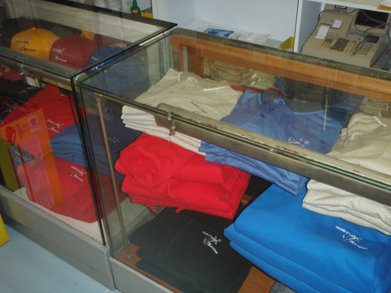

Chain O'Lakes Marina offers everything a boater may need for a day on the water.
CLEANING & MAINTENANCE
We offer a complete line of cleaning and maintenance supplies. At Chain O'Lakes Marina, you can find marine batteries and Mercruiser supplies, We also sell Bio-Kleen products featuring Amazing Cleaner, Fiberglass Hull Cleaner, Black Streak Remover and more.
BOATING FUN STUFF
Chain O'Lakes Marina carries a complete line of life vests, towables, inflatible chairs and games, tow flags ... come see our selection!!!

MARINA LOGO CLOTHING
Show your Marina pride with logo t-shirts, hoodies and caps. We have a large selection to choose from and we update our stock annually. Buy early!!!
EZ DOCK SYSTEMS
Need a portable dock for your PWC or small boat? Chain O'Lakes Marina is an authorized dealer for EZ Dock. We can provide everything you need and expertise advice with installation and set-up. Our marina uses EZ Docks for PWC's!!!
PARADISE PADS
Chain O'Lakes Marina is a distributer and seller of ParadisePads. These floatation devices are as simple as relaxing water toys can get. There is no inflating or deflating, simply roll out and let the fun begin.